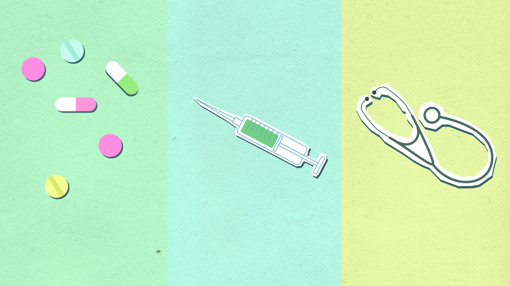

Doctor Dashboard
Monitor maternal and newborn health with smart digital tracking. Manage patient records easily and receive AI-powered clinical insights.
Detect risks early and improve care from your NeoMama dashboard.
Maternal Health Monitoring
Track blood pressure, weight, glycaemic levels and pregnancy progression for registered patients. Identify and flag high-risk pregnancies at the earliest stage.
Newborn Growth Monitoring
Assess infant growth against WHO anthropometric standards and detect developmental deviations early.
Patient Record Management
Maintain and access complete patient records and clinical notes through a secure, structured digital interface.
AI Clinical Insights
Receive AI-generated clinical recommendations and risk alerts to support informed decision-making.
AI Health Alerts
View all- Loading alerts...
Recent Patient Activity
- Loading activities...
Quick Actions

NeoMama Assistant
Manage maternal and newborn health easily with smart digital tools and AI insights.
System Overview
NeoMama is a clinical-grade digital health platform designed to support medical professionals in monitoring maternal and neonatal health. It provides structured patient records, real-time risk alerts, and AI-assisted clinical insights within a secure and accessible environment.